来源：https://efc22s7wcz.feishu.cn/docx/AMLOdUXlgozk80x3rRocJlQ1nrg
大家好，我是石头，专注游戏租赁以及私域引流。回首2023年是我们业务稳定增长的一年，也是我们突破新玩法模式的一年，我们从每个月啥事不干保底几万的营收到把母盘不断增加营收的同时，我们也在研究得各类的产品项目，进粉渠道，扩大副业收入！
在此过程中我们今年在承接的这么多进粉流量端口的粉丝，闲鱼的质量是最好的复购能力最强需求高市场小且竞争力小的一个平台。
那么此次分享我们以闲鱼平台为例子来深入的讲讲新手小白操作闲鱼，引流游戏租号粉如何每个月稳定产出5千到一万收益的！
此文无需买号进行任何投资如何利用转租平台进行获取差价赚取收益！
全实操教学，可直接上手操作，项目无门槛，适合正在寻找项目的小伙伴
简单来说就是通过低价的账号渠道，在闲鱼上进行发布商品链接，引导顾客咨询，倒流私域进行成交，
那么游戏转租的优势有什么？前段时间写了一篇游戏租赁的帖子，门槛相对于较高，都是十几万的账号资仓，不太适合新手小白去进入这行业，因此我们这篇文章来说下，游戏转租如何空手套白狼进行获利赚取差价，并且无需购买账号，非常适合小白进行操作，
游戏转租也可以理解为在转租平台上拿货价0.3但实际出租价格可以为5-10元，每个小时，依据账号的价值进行适当的加价。
为什么推荐新手小白进入此行业先做游戏转租？
市场大，风险小，市场上能进行出租的游戏均可以赚取差价，只要解决获客，还是很有搞头的，目前在闲鱼市场上还是处于蓝海阶段，竞争并不是那么激烈，而且其中的利润还是很大的。
单价0.3的账号
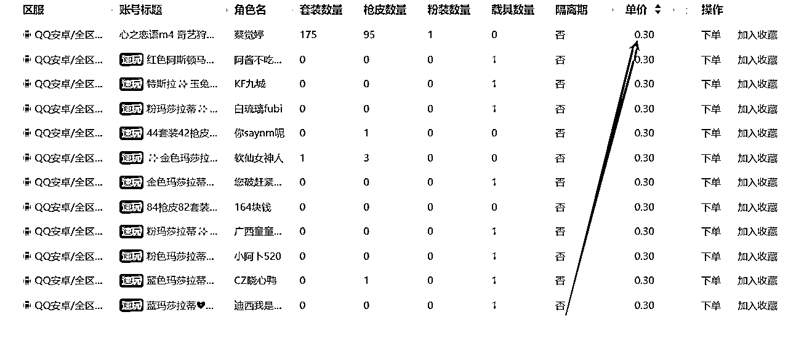
成交单价：
10块钱每个小时
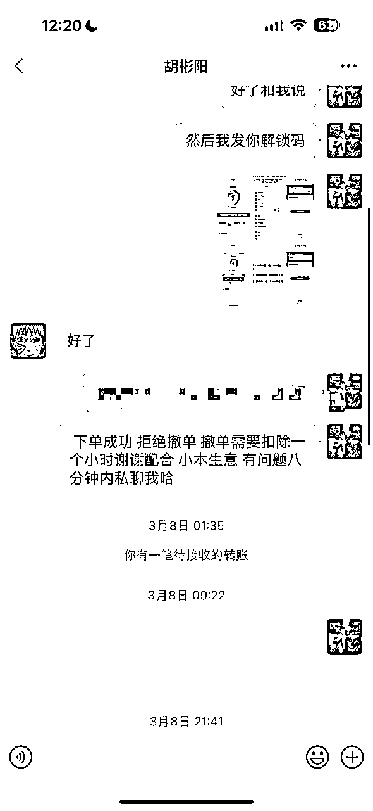
1.首先在开始实践操作闲鱼店铺是我们需要注意的是 首先先检查自己的账号是否以前有过违规行为
2.其次检查完之后我们要确保单号 单机 单IP 这是最关键的 别问为什么 切记别在无限上进行操作我们的店铺
3.准备就续时 下面我们要进行对闲鱼账号的完善 完善到百分之90以上
4.关于闲鱼的设置 闲鱼 获取手机APP定位权限 关闭 及其消息通知打开 并允许后台APP刷新 {这块不带截图 大家应该都知道怎么操作}
5.芝麻分尽可能650分以上 700左右 越高越好 具体咨询打开支付宝 首页搜索芝麻信用 点击进入即可
6.之前有过违规的账号依旧可以起 但是具体还是要依据实际情况来操作 如果一个星期内 没有出单或者曝光较少 那么及时换号 别在做无用功 及时和小助理反馈整体的流程
既然我们是做出租那么修改的模版样式，我这里给大家进行一个参考
账号的资料设置十分关键，那么给大家参考几个模板
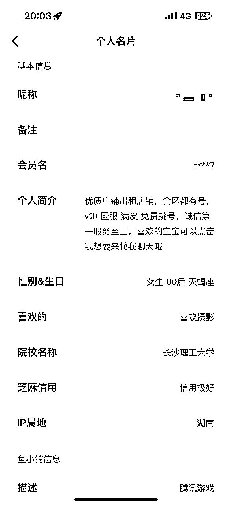
在看完我们上面的资料设置以及养号流程后，我们要根据自身的经验进行挑选，我适合什么游戏？我玩过什么游戏？如果都没接触我们这里推荐几个手游和端游的赛道，比如和平精英，王者荣耀，端游：无畏契约，csgo等等......
如果你是一名想从事这项目的新手小白但是又不玩游戏的人来说，前期需要先去了解基本的游戏皮肤数量段位是否能有排位之类的，以便于后续租客再问你的时候你答非所问。
所需准备的软件app: 租号玩 虚贝 u租号
此篇文章全文围绕手游和平精英为案例进行延申，其他游戏也适用此套模式
以和平精英为例子：文案的编辑、如何寻找主图、价格的拟定，地区选择
这给大家一个万能的公式，热门皮肤+热门载具+热门套装
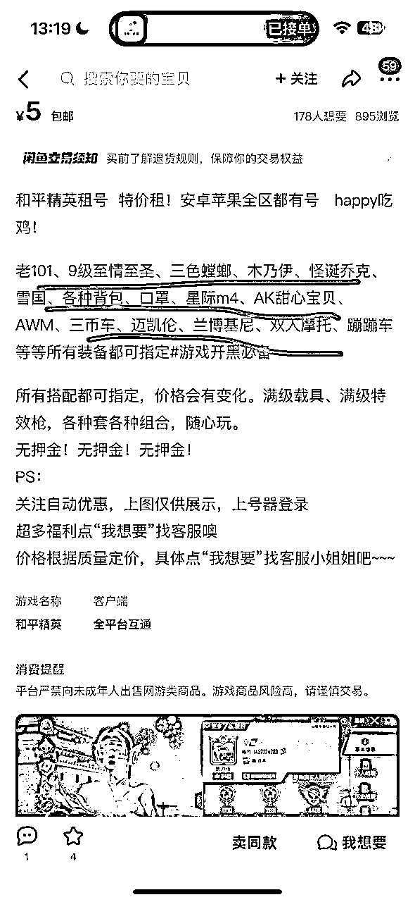
这时候我们就要用到我们准备的几款租号的软件：租号玩 虚贝 u租号
1.打开租号平台
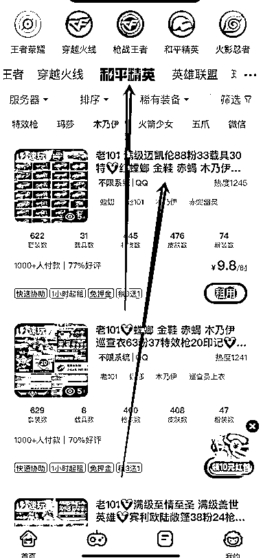
2.截图账号信息
文案和主图寻找完成后我们就可以发布了，前期我们推荐是单价在2-6的引流款先上，先把店铺的权重打上去
经过我们五个账号的实测，地区选择小县城他的曝光和出租率会高一些，但这只是我们小部分账号的测试
4.1 闲鱼搜索关键词： 和平精英租号
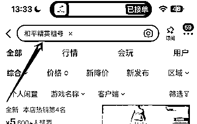
找到想要数和浏览器较高的同行店铺 直接搬运他们的主图和地区，价格比同行更低
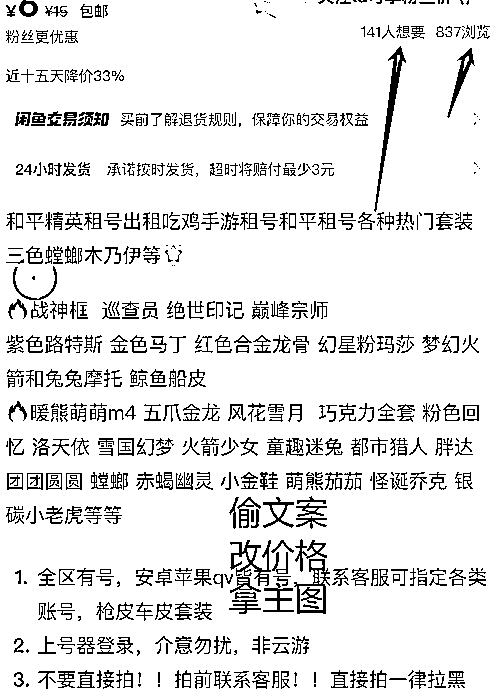
1.拿主图的情况下要修改原有的MD5，也就是截图修改，修改滤镜之类
2.价格的拟定，人家做六块我们就是要做五块 四块
3.文案标题可以调换前后位置进行简单的修改格式
做闲鱼二手交易类平台，先有咨询在有成交，那么我们要如何做好客服呢？
下面为大家讲一下俩种模式进行操作
设置自动回复：亲有什么想玩的皮肤和载具，方便说下吗，这里为你寻找账号！
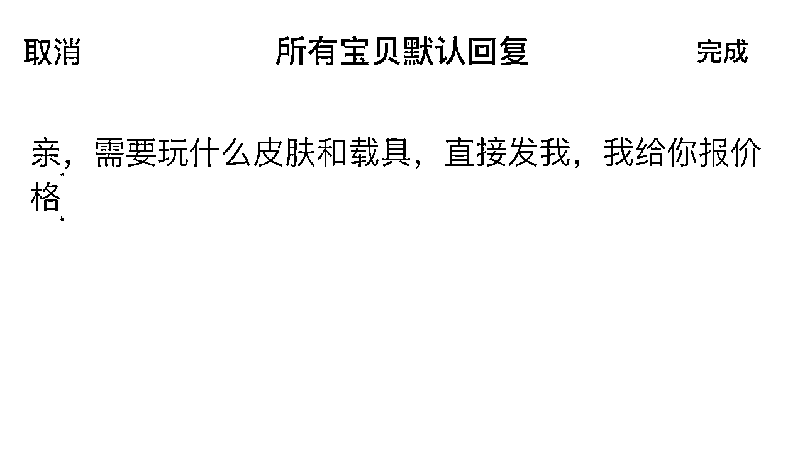
客户一般都是会回复：某某载具皮肤等等，统一回复都是有的，接着倒流私域进行成交
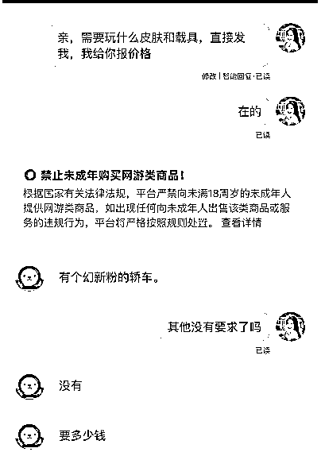
在闲鱼上进行成交下单，此步骤很简单就是相对于比较麻烦，比如说会遇到的情况是，租完三四个小时但是顾客要求退款，你不同意的话就是走小法庭，会比较复杂，
首先我们先给大家普及下，能发你微信让你加的顾客一般来说都是比较着急的，能在闲鱼上进行租号的，一般都是着急和朋友开黑但是没有号可以玩，或者年纪比较大，不知道租号软件以及在闲鱼上进行租号的价格会比平台上便宜很多。
1.先确定区服，安卓还是苹果 微信还是QQ
2.询问顾客需求，截图发送账号皮肤价值 数量
3.引导顾客下单转账
4.让顾客下载上号器
5.发送解锁码
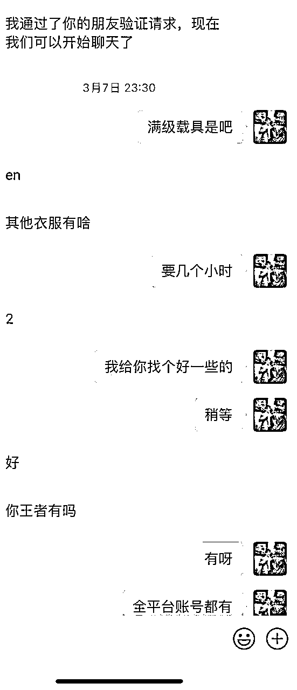
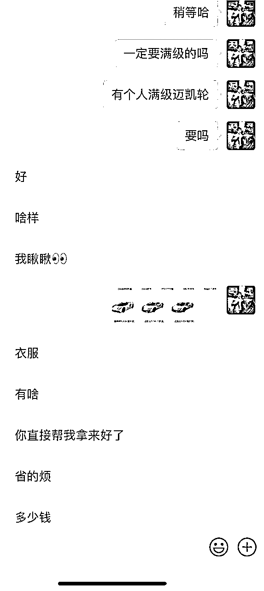
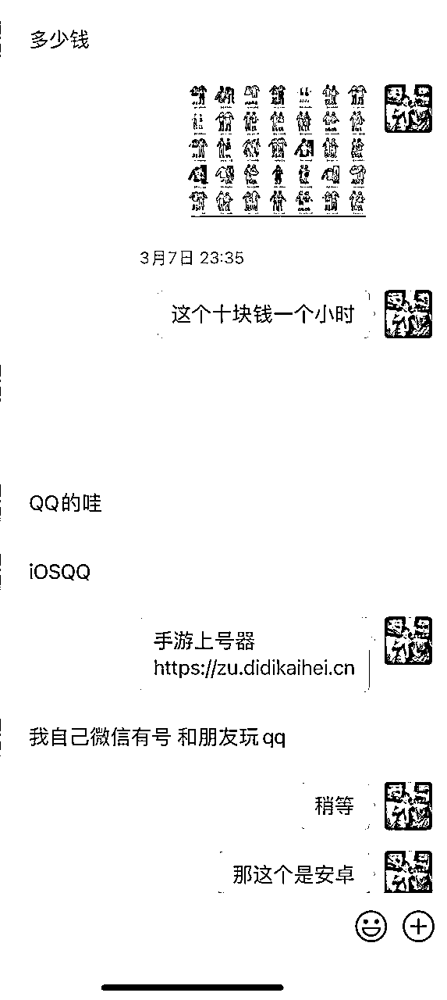
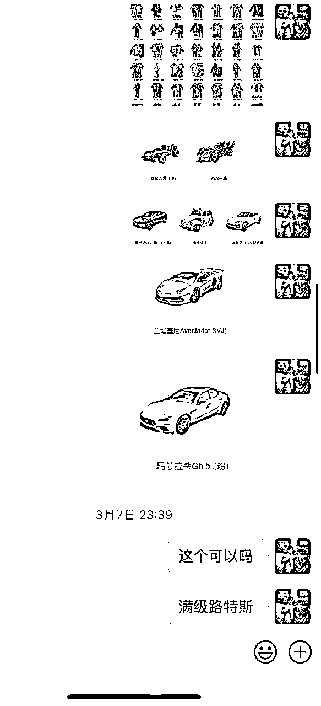
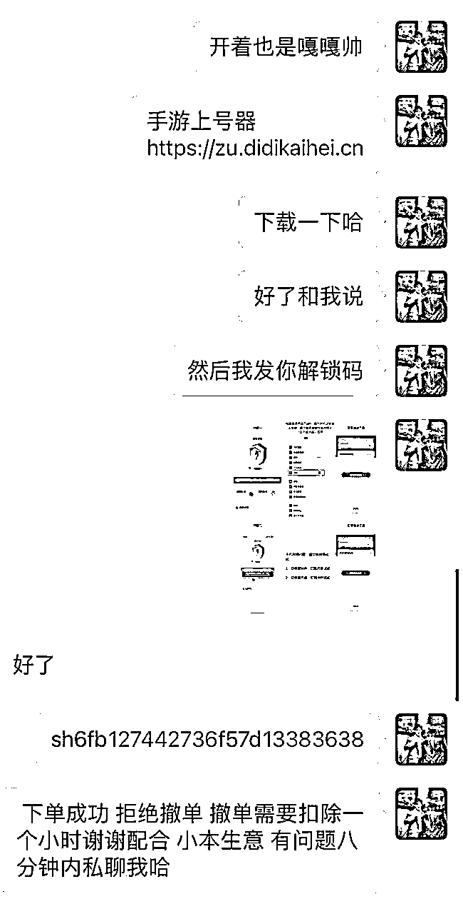
第一个平台： https://guwei.vip.zuhaowan.net/
也是我们自己的平台。
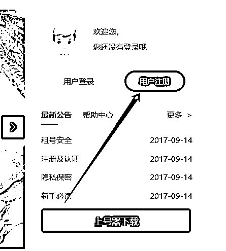
注册完成后界面如下：市面上较为热门的游戏我们都能进行开设
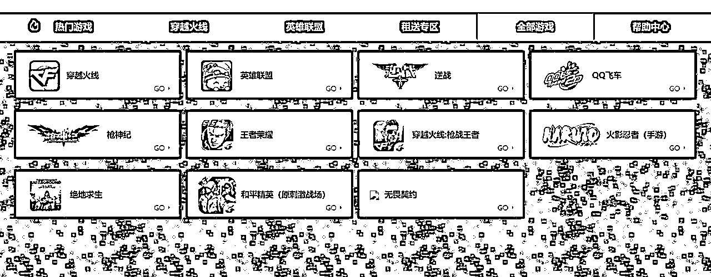
注意：上号器的下载地址是我们在顾客进行下单成功后要发给顾客，有了上号器才能规避一些外挂等
上号器下载完成后才可以根据解锁码进行上号，这是一定要注意的哈
手游端游上号器下载地址：
https://zu.didikaihei.cn
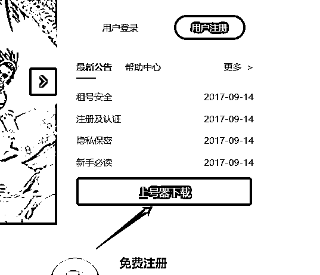
点击立即租赁即可进行下单，按照客户需求进行搜索账号皮肤以及数量即可操作不难。
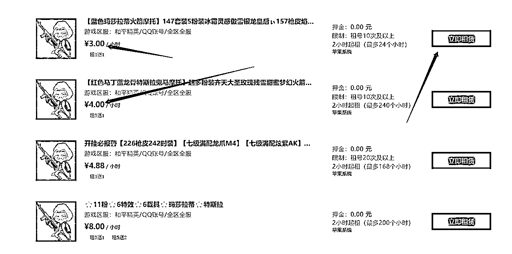
按照市场行情，在平台上进行拿号的价格一般三块钱的拿号价格我们都是在6-8一个小时，俩个小时起租，当然有一些后台1块钱的账号内的价值是很高的，所以我们要根据账号的皮肤定价，基本上都在6-8每个小时，有一些账号可以10块钱一个小时，定价的区间根据自己顾客而定
在引导私域成单时，发顾客账号截图是必不可少的一个环节，能有效的促进成交量
点击链接 界面如下 在往下滑
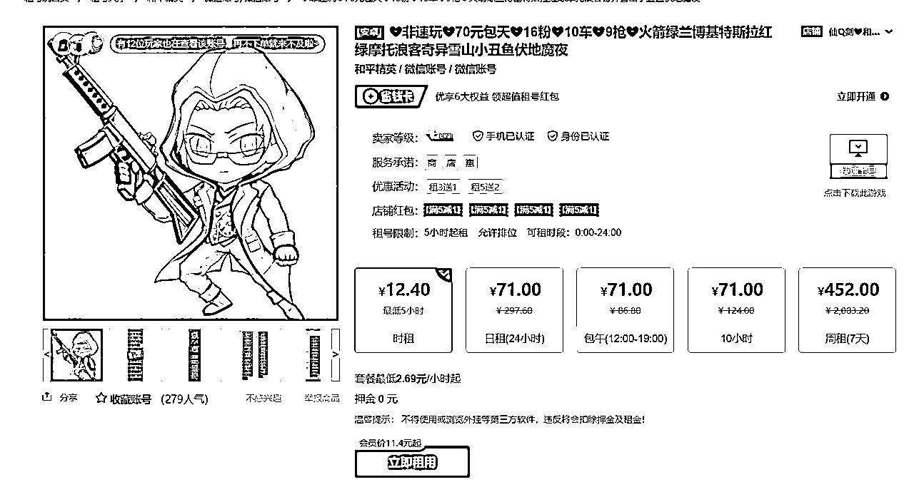
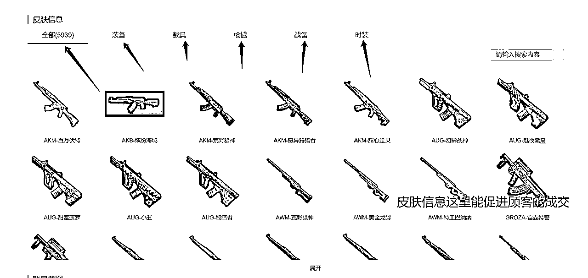
皮肤信息这里也是账号内置的皮肤数量，都是真实的数量，所以根据顾客选号的时候，都可以按照这上面进行挑选载具皮肤战备发送给顾客，如果满意就是80%成交了，如果不满意在问清楚顾客的需求寻找账号。
1.游戏租赁具有超强的复购能力，一般一个顾客在私域上一个月都有四五次进行下单成交
2.操作的门槛较低，市场比较强，不仅仅只能做咸鱼，很多平台都是适用
3.相对于以前分享的文章，我们都是教如何购买账号计算回本周期，当然风险较强，存在很多不确定元素，所以不适合新手小白进行操作
4.依据我们这操作这么久的实测，5000人的私域，每个月变现大几千上万很简单，更别说一万人的私域了。
1.回复要及时，因为能在闲鱼上进行租号的客户，都是比较着急的，如果回复不及时的话很容易错过了一个顾客
2.如果对于一点游戏都没有做过的人来说其实入门也是比较难的要先去熟悉游戏皮肤等等等
3.如果想短时间内靠转租月入几万还是比较难的，是一个积累的过程
项目适合现阶段比较迷茫的不知道从事什么项目的圈友，做游戏私域需要缓慢的积累，如果想一口吃下一个胖子其实还是比较累的，所需要的设备流程都要十分的熟悉，所以各位圈友还是慢慢进行操作，每天赚百来块钱还是十分的轻松，我是石头，专注游戏租赁私域引流。